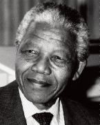

“Beyazların egemenliğine karşı savaştım ve siyahların egemenliğine karşı da savaştım. Tüm insanların birlikte uyum içinde ve eşit fırsatlarla yaşadığı demokratik ve özgür bir toplum idealini yaşattım. Bu, yaşamayı ve başarmayı umduğum bir idealdir. Ama eğer gerekirse, uğruna ölmeye de hazır olduğum bir idealdir.” -Nelson Mandela, 1964’te ‘vatana ihanet’ten yargılanırken

1964’te Nelson Mandela (1918- ), ülkesi Güney Afrika’ya karşı vatana ihanet suçlamasıyla yargılandı. İdam cezasından kıl payı kurtulan kırk altı yaşındaki avukat, idam yerine Cape Town yakınlarında bir adada bulunan hapishanede ömür boyu hapse mahkûm oldu. Mandela’nın suçu, Güney Afrika’nın herkesçe “apartheid” olarak bilinen ırkçı kanunlarına karşı direnişi örgütlemekti. “Ayrılık” anlamına gelen apartheid rejimi, siyahileri yasal olarak beyaz azınlıktan daha aşağı tutarak siyahi Güney Afrikalılar’ın –ülke nüfusunun dörtte üçü– birçok siyasi hakkını yok saymıştı.
Hapishanenin Mandela’yı ruhsal olarak çökertmesi planlanmıştı. Bir taş ocağında ağır iş yapmaya zorlandı, yılda sadece bir ziyaretçiye izin verildi ve minicik hücresinde ışığı kapamasına asla izin verilmedi. Çünkü Mandela’nın siyasi partisi olan Afrika Ulusal Meclisi (ANC), ayrımcılık rejimine direnişte şiddet uygulamıştı ve Güney Afrika hükümeti de Mandela’yı bir terörist olarak görmüştü. On yedinci yüzyıldan beri Güney Afrika’ya göç eden Hollandalı ve İngiliz yerleşimcilerin torunları olan Güney Afrikalı beyaz yöneticiler, ülkede sımsıkı tuttukları iktidarı devam ettirmek için ‘apartheid’ı dayattılar.
Ancak Mandela, buna boyun eğmeyi reddetti. Hapishane duvarlarının içinden ANC’yi yönetmeye devam etti. Bitmek bilmeyen kararlılığı, gardiyanların bile saygısını kazandırdı. Hapishane dışında Mandela, dünyanın dikkatini ‘apartheid’ın adaletsizliğine çekerek Güney Afrika ve başka yerlerde milyonlarca siyahinin kahramanı oldu. 1990’da uluslararası baskılar sonucunda Güney Afrika’nın beyaz ağırlıklı hükümeti, sonunda ‘apartheid’ı yürürlükten kaldırdı ve Mandela’yı serbest bıraktı. Mandela, 1993’te Nobel Barış Ödülü’ne lâyık görüldü ve 1994’te ülkenin ilk çok ırklı seçimlerinde Güney Afrika’nın başkanı olarak seçildi.
Mandela başkanlığa seçilmesinin ardından adadaki hapishaneden eski gardiyan arkadaşlarından bir beyazı doğum günü partisine davet etti. Eski gardiyan, PBS televizyonundan bir yönetmene “Eski mahkûmlarımdan birinin şimdi liderim olmasından gurur duyuyorum.”, dedi. Dünyanın en fazla saygı duyulan devlet adamlarından biri olan Mandela, 1998’de başkanlıktan emekli oldu.
EK BİLGİLER:
1. 1960’lardan önce Amerika Birleşik Devletleri’nin güney eyaletlerindeki ırk ayrımına yakın bir sistem olan apartheid altında ırk, Güney Afrikalılar’ın günlük hayatlarında belirleyici bir etkendi. Irklar arası evlilik ve cinsellik yasaklanmıştı ve plajlardan hastanelere kadar her şey ayrılmıştı.
2. Ayrımcılık rejimini protesto etmek için Uluslararası Olimpiyat Komitesi, Güney Afrika’yı 1964’te Olimpiyat Oyunları’ndan men etti. Güney Afrikalı atletler, 1992’deki Barcelona Olimpiyatları’na kadar yeniden yarışamadılar.